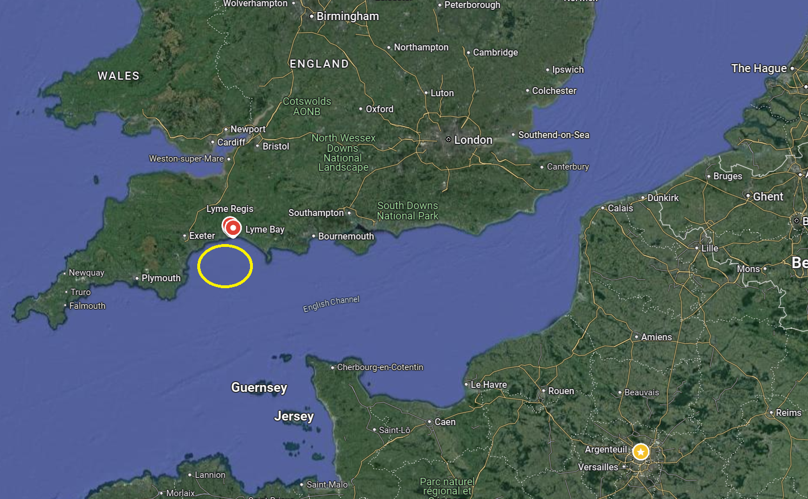
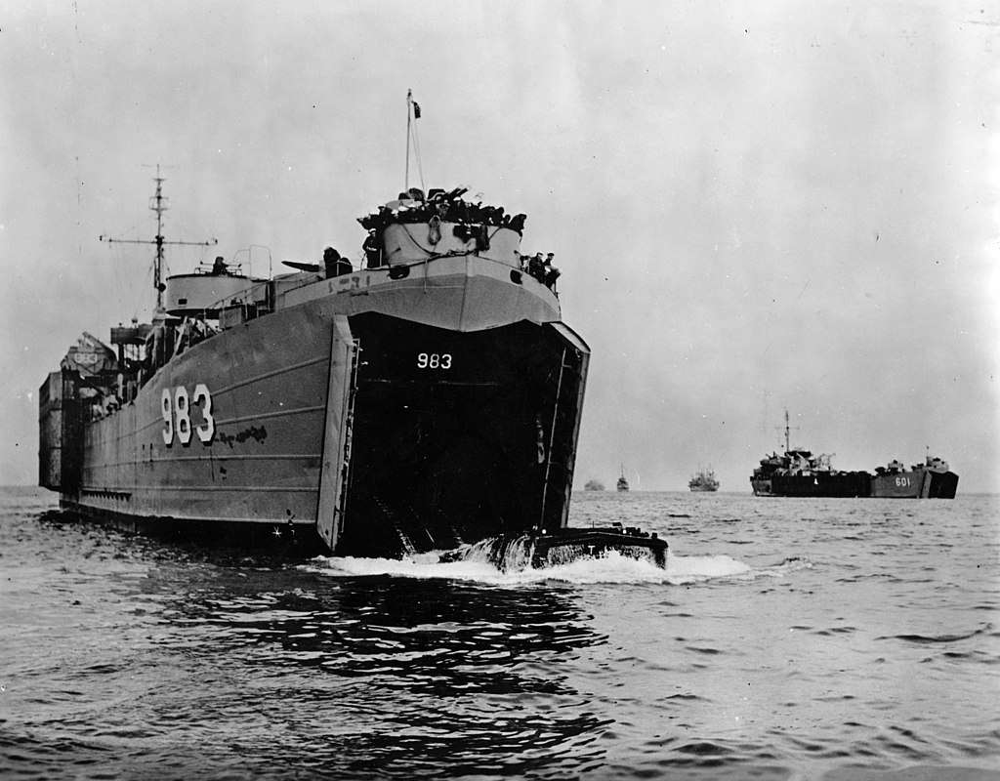
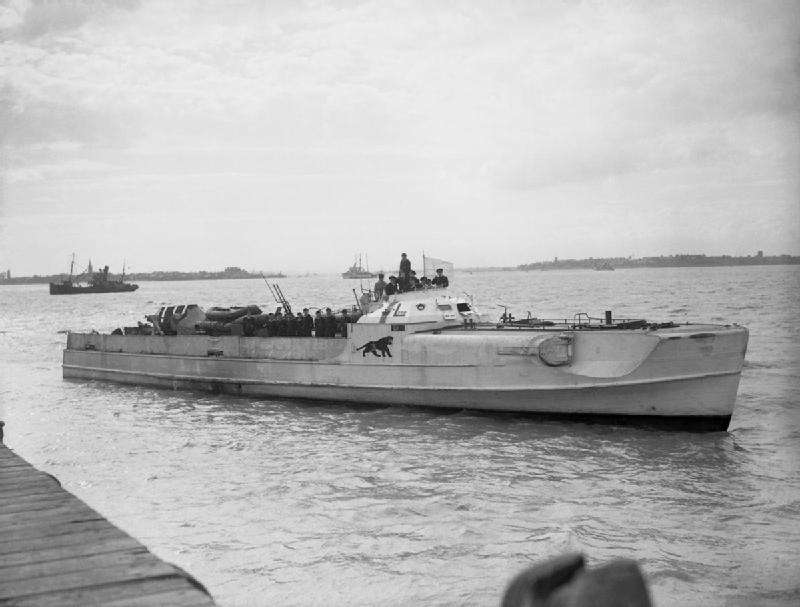
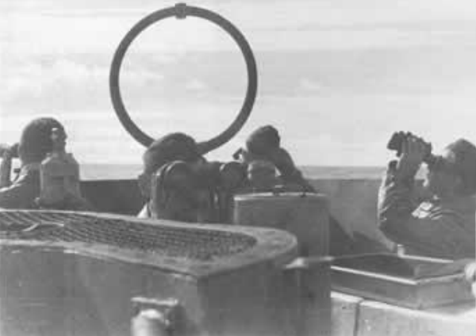
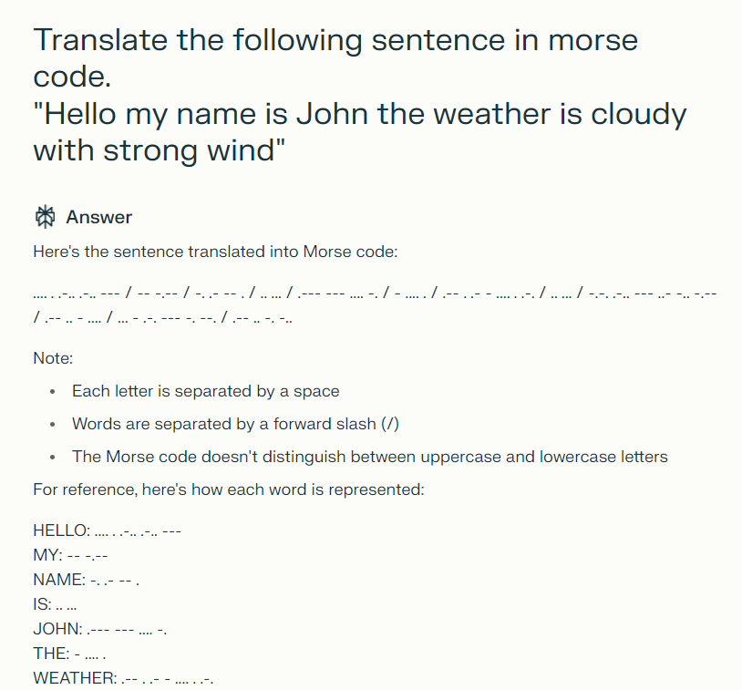
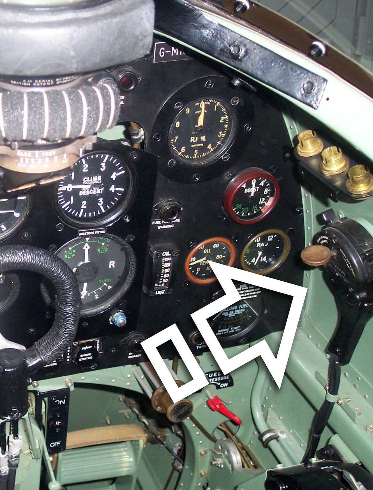

무선침묵 이야기 (6) - U-boat는 짧게 말한다
게시: 2024-08-29T06:30:51+09:00
<호랑이 훈련의 비극> 전에 WW2 당시 미해군 조종사들에 비해 일본해군 조종사들이 무선침묵을 매우 중요시했는데, 그게 좀 지나쳐서 제대로 된 지휘통제가 안될 정도였다고 언급했었음. 무선침묵에 있어서 정도가 지나쳤다? 원래 무선침묵은 보안의 하나로서 아무리 강조해도 지나침이 없는 것 아닐까? 무선침묵 준수가 왜 중요한지는 무선침묵을 깨뜨린 결과 벌어진 참사를 보면 알 수 있는데, 사실 그런 사례가 아주 많지는 않음. 연합군과 추축군 모두 무선침묵을 매우 중요시했기 때문. 그러나 물론 가끔 문제가 터짐. 대표적인 사례가 소위 말하는 슬랩튼 해변의 비극 (The Slapton Sands Disaster).

(라임 베이의 위치. 바로 왼쪽 옆에 플리머스 항구가 있음.) 1944년 4월 28일, 노르망디 상륙작전을 앞둔 미군은 목표 지점인 유타 해변과 거의 똑같은 환경인 영국 남부 라임(Lyme) 만의 슬랩튼 해변에서 상륙 훈련을 실시하기로 하고 여기에 Operation Tiger라는 작전명을 부여. 병력과 장비를 실은 8척의 LST (Landing Ship Tank, 탱크 상륙정)이 플리머스에서 출발하여 슬랩튼 해변으로 향함. 문제는 이들이 처음 경험하는 상륙훈련에 어리버리했는지 영국 해안이라 경계를 풀었는지 무선침묵을 준수하지 않았다는 것. 이들의 무선통신은 당장 프랑스 해안에서 감시의 귀를 쫑끗 세우고 있던 독일해군에게 금방 포착되었고, 이들은 간단한 삼각법을 통해 이렇게 갑자기 활발해진 무선통신의 근원지가 라임 만이라는 것을 쉽게 파악한 뒤, 거기로 어뢰정인 E-boat 9척을 파견.

(LST란 바로 이런 배. 우리나라 사람들은 한미연합 훈련 때 꼭 상륙작전을 하기 때문에 이런 LST라는 형태의 상륙정에 대해 매우 익숙한 편.)

(독일해군에는 U-boat만 있는 것이 아니라 이런 E-boat도 있음. 치명적인 것은 매 한가지.) 원래 미해군 LST들은 코르벳함들의 보호를 받게 되어있었으나, 이런저런 이유로 호위함들이 빠진 상태에서 독일해군 E-boat들이 완전 무방비 상태의 LST들을 덮침. 8척 중 2척이 어뢰 공격으로 격침되고 다른 LST들도 크게 파손됨. 결국 미군 749명이 이 일방적 전투(?)에서 전사했는데, 이 숫자는 정작 실제 노르망디 상륙작전에서 유타 해변에서 발생한 전사자 숫자보다 더 많은 숫자였음. 이렇게 적의 무선통신을 감청하여 그 발신 위치를 파악한 뒤 공격하는 것은 양측 모두가 항상 호시탐탐 노리는 바였음. <발견하면 냅다 뛴다> 독일해군이 아무리 해상초계기 등을 이용하여 연합군 호송선단의 대략적인 위치를 파악한다고 하더라도 드넓은 대서양에서 모든 선박들의 위치를 정확히 파악할 수는 없는 법. 따라서 각각의 U-boat들은 모든 방법을 동원하여 적 선박의 위치를 스스로 찾으려고 노력. 그러나 마스트가 낮은 유보트의 특성상 망원경으로 볼 수 있는 거리에는 한계가 있었으므로, 가장 기본적인 탐지 방법이 바로 전파 발신 방향 탐지. 배터리 충전을 위해 부상하면 언제나 전파 방향 탐지용 loop 안테나를 꺼내놓고 뭔가 잡히는 전파가 없는지 귀를 기울였음. 이런 경우엔 독일해군에게 제해권이 없다는 점이 오히려 더 도움이 되었는데, 대서양 한복판에서 뭔가 전파가 잡힌다면 그건 반드시 연합군측 전파일 것이기 때문.

(부상한 U-boat가 U-67 DF Antenna를 꺼내놓고 적함의 전파 발신 방향을 애타게 찾고 있는 모습) 이렇게 유보트들이 연합군 선박들의 전파를 찾기 위해 귀를 쫑끗 세우고 있는 동안, 반대로 연합군 해군도 유보트들이 발신할 수도 있는 전파의 방향을 찾기 위해 안테나를 이리저리 돌렸음. 유보트나 연합군 구축함이나 운이 좋아서 적의 전파를 탐지한다고 해서 그 위치를 알 수 있는 것이 아니고 그 방향만 알 수 있었음. 그러나 사실 그거면 충분. 유보트나 구축함이나 서로의 전파 발신 방향을 탐지하면 무조건 그 방향으로 냅다 달렸음. 항로를 변침하거나, 혹은 상대가 유보트인 경우 잠항해버리기 전에 조금이라도 빨리 달려가 어뢰를 쏘든 폭뢰를 투하하든 해야 했기 때문. 물론 그렇게 잡은 전파 발신원이 수평선 바로 너머인 30km 밖이 아니라 300km 밖에 있는 것이었다면 헛수고한 셈이 되겠지만, 워낙 상대방을 찾을 확률이 낮은 환경에서는 그런 헛수고는 충분히 감내할 수 있었음. <메시지는 짧을수록 좋다> 이런 무선침묵 및 전파 발신 방향 탐지 싸움에서 아무래도 불리한 쪽은 독일해군 유보트쪽. 지난 편에 이야기했듯이 독일해군 유보트들은 유럽대륙의 기지에게 매일 주기적으로 보고문을 전송해야 했기 때문. 보고문은 정말 회사 월급쟁이처럼 딱 정해진 포맷으로 되어 있어서 공격 대상인 수송선단의 위치, 자함의 위치, 날씨 등으로 되어 있었음. 물론 이런 내용은 모두 암호화 장비인 Enigma를 통해 암호화되어 전송되므로 그 내용은 연합군이 알 수 없었음. 문제는 그 내용을 전송하는데 걸리는 시간. 처음에는 그런 보고문을 무전병이 키(key)를 두둘겨 모르스 부호로 타전. 그러나 모르스 부호는 음성 무선통신에 비해 잡음이 심한 원거리에서도 확실하게 메시지를 전달할 수는 있지만 본질적으로 전송 속도가 느린 통신 수단. Dot과 dash, 그리고 그 사이의 간격을 통해 신호가 전송되기 때문.

(Perflexity AI를 통해 물어본 영문장의 모르스 코드. ChatGPT에게도 똑같이 물어봤는데 (cross-check) 똑같은 답변이 나오는 것으로 보아 확실한 듯.) 가령 위 그림에 나오는 "Hello my name is John the weather is cloudy with strong wind"라는 문장은 음성으로 전달하면 4~5초 밖에 걸리지 않지만, 이걸 모르스 부호로 타전하면 얼마나 걸릴까? 영국공군에서 Spitfire 전투기 조종사가 되기 위해서는 분당 최소 15 단어를 모르스 부호로 타전할 수 있어야 했는데, 저 문장은 12단어임. 초보자의 경우 1~2분, 숙련된 무전병이 타전한다고 해도 40초 이상이 걸림.

(전에도 올린 바 있었던 영국 Spitfire 전투기 조종석에 설치된 모르스 부호 타전기의 모습.) 이렇게 매일 같이 타전해야 하는 보고문이 1분 이상 걸린다면 정말 loop 안테나에 의해 발신원 방향을 탐지 당하기 딱 좋은 시나리오. 이건 은밀함이 생명인 유보트에게는 치명적인 약점. 곧 독일 잠수함 사령부에서도 그 문제를 깨닫고 뭔가 방법을 모색. 그렇게 나온 것이 쿠어츠지그날(Kurzsignale, 짧은 신호라는 뜻). 일종의 코드집인 이 쿠어츠지그날은 그냥 단순하게 '수송선단 위치' 또는 '구름이 50% 정도 낀 날씨' 등의 유보트가 많이 사용하는 단어들을 뭔가 더 짧은 단어로 대체하는 형식. 사용해야 하는 알파벳 글자 수가 훨씬 줄어드니까 타전의 길이도 훨씬 줄어들었음. 덕분에 이제 매일 보고문을 타전할 때 걸리는 시간이 대개 20초 정도로 크게 줄어들었음. 일반적으로 loop 안테나를 통해 어느 정도 정확한 전파 발신원 방위각을 탐지하려면 약 1분 정도가 걸렸으니, 저 정도면 유보트의 안전에 큰 도움이 된다고 독일 잠수함 사령부는 생각. 그러나 그건 착각이었음. (다음 주에 계속)